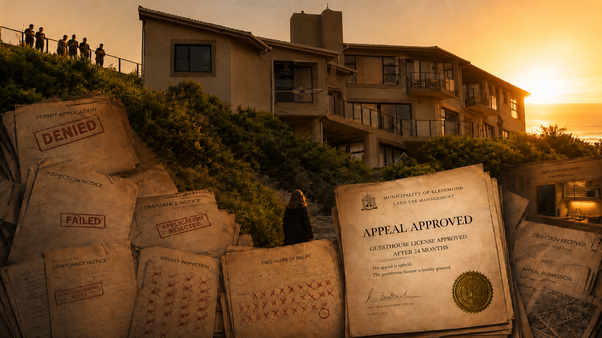
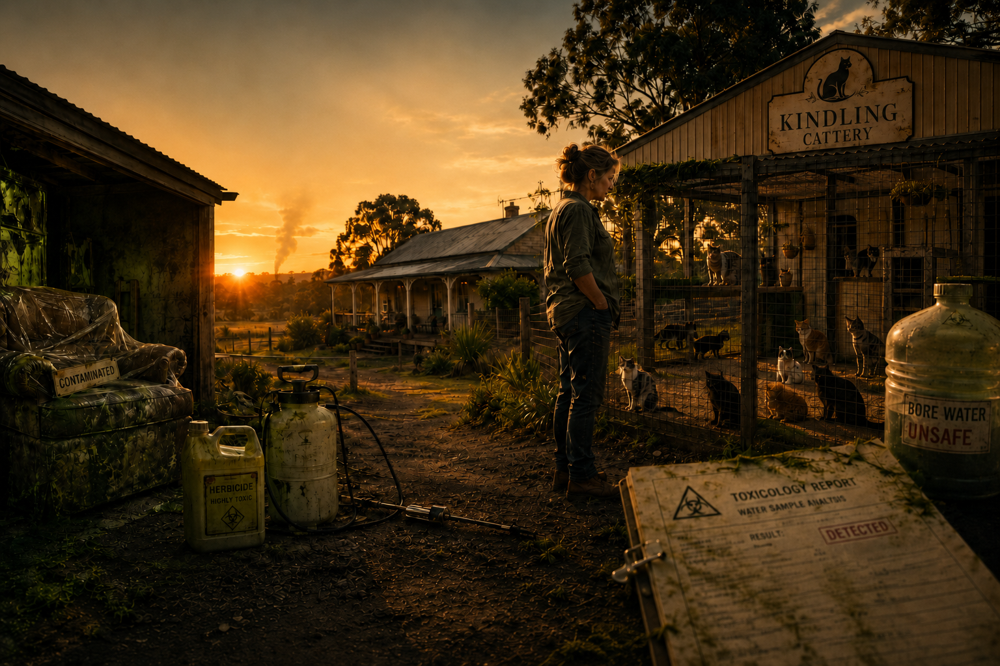

Five-Season Psychological Suspense Anthology
Sharing one emotional DNA: truth is always dressed in disguise.
Wild and Free Instrumental
The Deception Anthology
Five stand-alone stories. Five different systems. Five different mechanisms of harm.
Truth is always dressed in disguise. Survival requires reading the costume before confronting what wears it.
The Five Seasons
Abigail Fisher arrives in London with nothing but her talent and a single, dangerous belief: that excellence and integrity are sufficient protection. She builds Savile & Sage into something genuinely extraordinary — a boutique on Savile Row that becomes known not just for its design but for the precision of its craft, the loyalty of its team, the intelligence of its vision. The Velvet Requiem becomes her masterpiece: a design so elegant, so perfectly rendered, that it walks into the world carrying her signature in every stitch.
But excellence makes you visible. And visibility has a price. Unknown to Abi, a diamond smuggling and money laundering operation has been constructed inside her boutique. Not despite her talent — because of it. Her work is the vehicle. Her business is the cover. Her team is the infrastructure. Five moths circle the flame Abi Fisher built. Each takes something. Her talent. Her labour. Her name. Her love. Her business.
Beware of what you want. Because that is exactly what you get.
Episodes
9 × 50 min
Status
Scripts Complete
Episodes
9 × 50 min
Status
Scripts Complete
Abigail arrives in New York in 1991 with her children and a qualification in accounting. She has survived London. She has rebuilt herself. She is ready to be invisible again, to work quietly, to build something that cannot be taken from her. Instead, she walks into the most elegant trap of all: a corporate architecture where the system itself is the weapon.
Zugzwang is a chess term. It means a position where any move you make worsens your position. The rules require that you move. But movement itself is the mechanism of your destruction. Abi enters advertising at executive level — a world where value moves invisibly inside the group to where it is most needed. She is intelligent. She sees clearly. And what she sees is that the system is designed to make every legitimate move look like complicity. By the end, she has lost her position, her credibility, and her belief that intelligence and honesty are sufficient.
Zugzwang. Any move worsens your position. The rules require that you move.
Abigail has survived two cities, two systems, two forms of institutional betrayal. She arrives at a logistics company at executive management level with the hard-won knowledge of how systems work and how they break. She is invited to contribute strategic vision. She is given access to the financial architecture. And within weeks, she discovers that the entire operation is built on a fraud so elegant, so perfectly invisible, that it takes her breath away.
The aged receivables are cycling. Bad debts move to cleared accounts, then reappear as current debt the following month. The pattern repeats. The cycle is endless. But that is only the visible layer. Above her, at the managing director level, insider trading moves in parallel. Shares are identified before public knowledge. And when someone must take the fall, Abi's brother-in-law is positioned perfectly. He is arrested. The real architects continue untouched. Abi tries to expose the fraud. She reaches for legal protection through a labour lawyer. Instead, she discovers that institutional corruption runs deeper than she imagined. Every system designed to catch the crime is itself compromised.
Some institutions protect themselves, not their people.
Episodes
9 × 50 min
Status
Framework Established
Episodes
9 × 50 min
Status
Framework Established

Abigail moves to Coolum, a small Queensland town, to build a guesthouse. It is meant to be a refuge. A place where she can control the outcome. A business built on her own terms. She discovers that small towns operate under different rules. The guesthouse license is denied. No clear reason. No pathway forward. An appeal is filed. The appeal takes two years. During those two years, she cannot market the property as a bed and breakfast. She cannot operate. She builds small kitchens for self-catering — a workaround, an adaptation, a woman refusing to be stopped by procedure.
But the procedure continues. Weekly inspections arrive. Compliance notices multiply. Each one is technically correct. Each one is procedurally proper. Each one is a small weapon in the hands of people who have decided she should not succeed. Jealous neighbours. A town where everyone knows everyone's business. A municipal system where procedure is not designed to serve but to obstruct. Where bureaucratic power becomes personal vendetta disguised as regulation. Two years of waiting. Two years of appeals. Two years of being frozen in place by a system that is working exactly as intended.
Some systems are smaller, more personal, harder to escape.
A Brisbane cattery owned by an elderly woman—one of four valuable properties in her name. When Celeste brilliantly manages the business and the old lady makes her heir, two men appear: the owner's brother and ex-boyfriend. They poison the borehole water. Celeste's husband Benedict builds a home on the property. His family drinks from that water and nearly dies. A cattery worker drinks from it and does die. Benedict installs a camera in his house. He captures the two men breaking in, searching, discovering the camera—caught on tape saying "oh shit" as evidence of their consciousness of guilt. The family flees with suitcases. The poisoned furniture sits in a garage, uncollected evidence. The property is sold. But the crime was never about the cattery—it was about controlling the elderly woman with dementia to steal her four properties worth millions.
Abi discovers what no one else pursued: the buried worker is evidence. Her body contains poison. The borehole can be tested. The camera footage can be recovered and authenticated. The will is locked in place because the old lady is unfit—the perpetrators tried to reverse that decision and failed. Now they've sold one property fraudulently and moved the old lady to Sydney, away from her community, fully under their control. Abi, educated in criminal law from years of institutional betrayal, fights across multiple legal battlefields: criminal prosecution for poisoning and homicide, elder abuse investigation, will verification, property protection, and exposure of systemic corruption. She discovers that the police are complicit, the magistrates refuse exhumation orders, the curator system can be cycled until the right corruptible official signs off on fraud. The system protects the perpetrators while a vulnerable woman remains exploited and a death goes unpunished.
In her final battle with institutional deception, Abi learns that proof is not the same as justice. The system chooses not to see what the evidence irrefutably shows.
Episodes
9 × 50 min
Status
Framework Established
